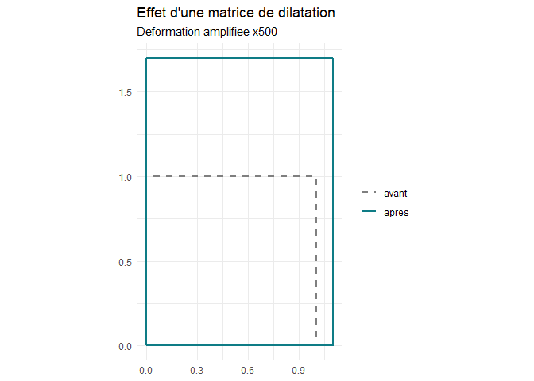

dilatR construit, applique, compose et analyse des matrices de dilatation (isotropes ou anisotropes, en 2D ou 3D), calcule la dilatation thermique linéaire et dimensionne le joint de dilatation d’un pont.
Une matrice de dilatation est une matrice diagonale D = diag(s1, ..., sn) avec si > 0 : elle multiplie l’axe i par le facteur si. Son déterminant donne la variation de volume. En thermique, si = 1 + αi·ΔT, où αi est le coefficient de dilatation linéique selon l’axe i et ΔT l’écart de température.
Exemple : le joint d’un tablier acier de 100 m
library(dilatR)
# Pose à 10 °C, températures extrêmes de -10 à 40 °C
dilat_joint(L0 = 100, alpha = 12e-6, T_min = -10, T_max = 40, T_ref = 10)
#> $allongement_mm
#> [1] 36
#>
#> $raccourcissement_mm
#> [1] -24
#>
#> $course_mm
#> [1] 60
#>
#> $capacite_mm
#> [1] 72Il faut prévoir un joint de 72 mm (course de 60 mm, plus 20 % de marge). Avec le jeu de données materiaux fourni par le package, on compare avec le béton :
a <- materiaux$alpha_x[materiaux$materiau == "Beton"]
dilat_joint(100, a, -10, 40, T_ref = 10)$capacite_mm
#> [1] 60La matrice derrière le calcul
D <- dilat_thermique(12e-6, dT = 30, dim = 3)
D
#> [,1] [,2] [,3]
#> [1,] 1.00036 0.00000 0.00000
#> [2,] 0.00000 1.00036 0.00000
#> [3,] 0.00000 0.00000 1.00036
dilat_resume(D)$variation_pct
#> [1] 0.1080389Pour un matériau anisotrope comme le bois (fibres selon x), la déformation dépend de la direction. Les dilatations thermiques sont minuscules : amplif les exagère pour que le dessin soit lisible (le facteur est écrit sur le graphique).
bois <- dilat_thermique(c(5e-6, 35e-6), dT = 40)
dilat_plot(bois, amplif = 500)
Les fonctions
| Fonction | Rôle |
|---|---|
dilat_matrice() |
construire D = diag(s)
|
dilat_thermique() |
construire D = diag(1 + α·ΔT)
|
dilat_appliquer() |
transformer des points |
dilat_inverse() |
revenir à la forme initiale |
dilat_composer() |
enchaîner plusieurs dilatations |
dilat_resume() |
déterminant, valeurs propres, anisotropie |
dilat_plot() |
dessiner une forme avant et après |
dilat_joint() |
dimensionner un joint de pont |
materiaux |
coefficients de dilatation de matériaux courants |
Le tutoriel complet est dans la vignette : vignette("dilatR") (installer avec build_vignettes = TRUE).